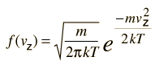

Maxwell Speed Distribution Directly from Boltzmann Distribution
Fundamental to our understanding of classical molecular phenomena is the Boltzmann distribution, which tells us that the probability that any one molecule will be found with energy E decreases exponentially with energy; i.e., any one molecule is highly unlikely to grab much more than its average share of the total energy available to all the molecules. Mathematically, the Boltzmann distribution can be written in the form

This distribution can be made plausible by a numerical example, particularly when put in graphical form, but the rigorous mathematical development by Boltzmann still stands as a major achievement in the mathematics of physics. We will take it as a postulate here and show that the Maxwell speed distribution follows from it.
If this distribution is applied to one direction of velocity for a molecule in an ideal gas, it becomes
|  |
|
Converting this relationship to one which expresses the probability in terms of speed in three dimensions gives the Maxwell speed distribution:
The steps involved in this conversion are
| Conversion to three-dimensional probability |
| Summing over all spatial directions |
Kinetic theory concepts
| HyperPhysics***** Heat and Thermodynamics | R Nave |